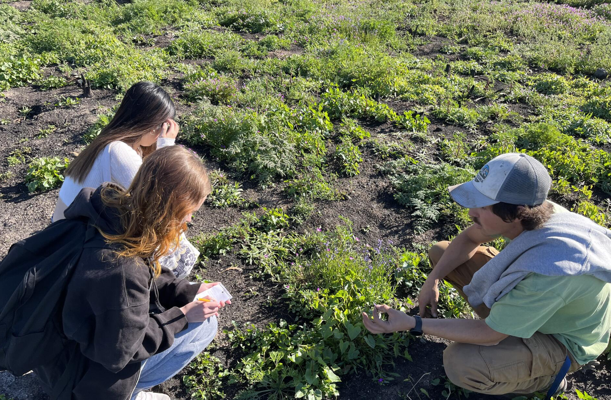
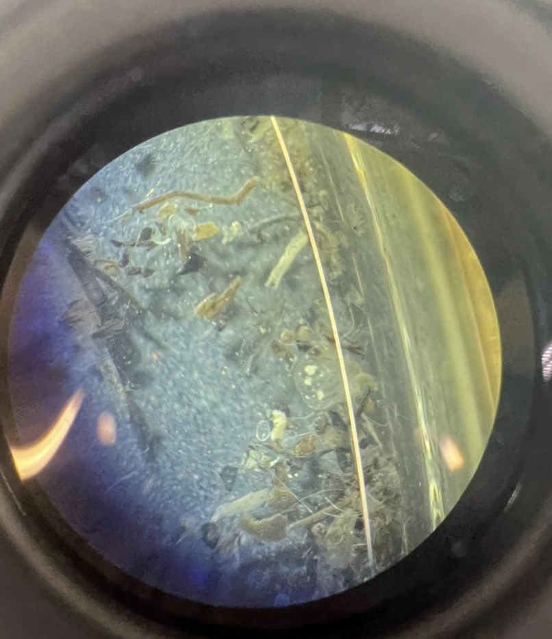
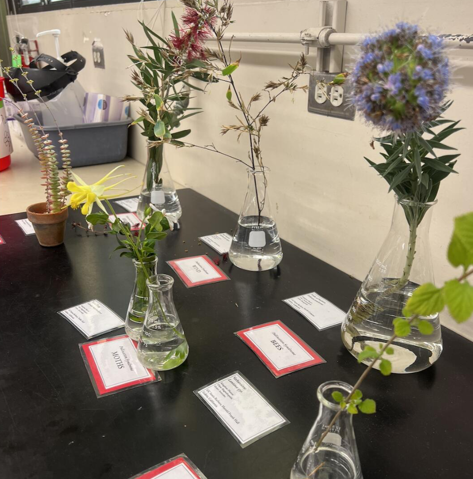

§ II.1 · Professional
Environmental Scientist
Applied Marine Sciences
Environmental scientist focused on water resources and pollution remediation. The work spans field research, quantitative modeling, and scientific writing in support of regulatory compliance and environmental policy.
§ II.2 · Research positions
Pollinator AI Researcher · YOLOv8 monitoring
UCSB Cheadle Center for Biodiversity & Ecological Restoration
Trained YOLOv8 deep learning object detection models to automate pollinator monitoring for two federally endangered coastal plant species — Ventura marsh milk-vetch (Astragalus pycnostachyus var. lanosissimus) and salt marsh bird's-beak (Chloropyron maritimum ssp. maritimum) — at the North Campus Open Space restoration site in Goleta. Designed and executed a 9-week field season (June–September 2025) across four monitoring sites, capturing 200+ hours of footage with Panasonic Lumix cameras in yarn-delineated quadrants. Three daily shifts, randomized site order, with weather, wind, and pollinator activity logged alongside every recording. Explored integration with the HyDaT tracking framework as a next step toward quantifying visitation events. Mentored two undergraduate research trainees throughout the season.
Conducted with Dr. Katja Seltmann and Dr. Chris Evelyn (UCSB Cheadle Center).

Bombus Vosnesenskii Research Assistant
UCSB Cheadle Center · Part-time
Hands-on field research collecting bee pollen and metabarcoding DNA data to document pollen collection patterns and identify native plant taxa at the genus and species level. The DNA dataset supported downstream protein-to-lipid ratio analysis and native bumble-bee / native-plant correlation modeling.

Aquatic Invertebrates Intern
UCSB CCBER · NCOS
Used aquatic invertebrate microorganisms as bioindicators of slough water health and overall local ecosystem health at the North Campus Open Space. Position included field sample collection (YSI meter measurements) and species identification under microscope using a dichotomous key.

Lab Intern · EEMB 148 (Upper-Division Biological Sciences Internship)
Nemophila Menziesii Lab · UCSB
Investigated whether the rate of evolutionary change depends on standing genetic variation in fitness, using Nemophila menziesii as a model. Methods drew on quantitative genetics — continuous traits influenced by many genes, flower size and bloom timing, fecundity (seed data), pollinator and drought effects on flower morphology, and the effect of corolla diameter on predation. Six hours per week.
Lab Volunteer · Apprenticeship
Nemophila Menziesii Lab · UCSB
Earlier volunteer phase of the same Nemophila menziesii research program — plant collection, pulverization, leaf-area measurement, and data entry — building the methodological skills required for the formal EEMB 148 internship that followed.
§ II.3 · Teaching & instruction
Teaching Assistant · Human Physiology (MCDB 111)
UC Santa Barbara
Taught core physiological concepts including thermoregulation, muscle function, cardiovascular dynamics, and endocrine systems, using case studies to connect theory to practical application. Led three weekly discussion sections, proctored midterm and final exams, and authored customized PowerPoint materials with case-study and worksheet integrations.
Teaching Assistant · Molecular & Ecological Biology Laboratory (EEMB 2LL)
UC Santa Barbara
Led students through foundational experiments in molecular biology, microbiology, ecology, evolution, and plant biology. Taught core lab techniques including PCR, RFLP analysis, gel electrophoresis, and Gram staining, and guided students in microbial classification using 16S rDNA and colony morphology. Facilitated multi-week experimental work using Drosophila melanogaster on natural selection and genetic variation, population dynamics of protists, ecological community analysis in rocky intertidal zones, and plant identification using dichotomous keys. Beyond technique, mentored students in scientific writing, experimental design, and data analysis using R and Google Sheets.

Teaching Assistant · Biometry (EEMB 146W)
UC Santa Barbara
Taught and facilitated a biometry course on statistical methods for biological research. Led weekly computer labs in R, graded coursework, and covered descriptive statistics, hypothesis testing, ANOVA, linear regression, and generalized linear models. Guided students in applying these techniques to real-world environmental and ecological datasets, with attention to experimental design and model selection.
DSP Proctor
UC Santa Barbara · Disabled Students Program
Provided in-class moderation and academic support for DSP students, attending up to three classes per day. Streamed course content, accommodated individual student requirements, and supported group discussion participation across two academic years.